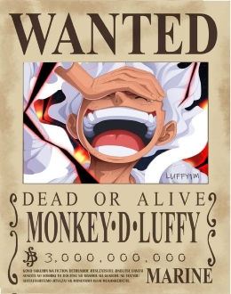
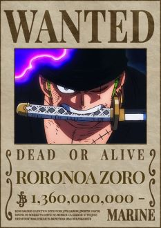
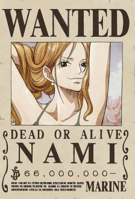
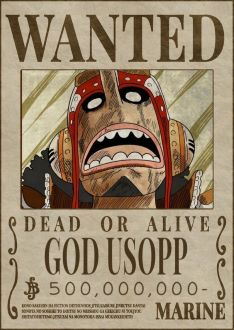
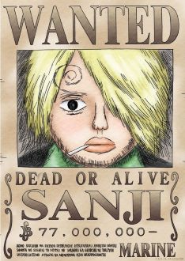
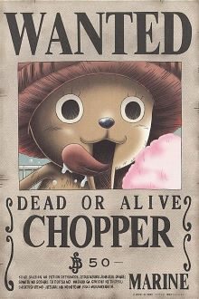

-
Luffy "O chapéu de palha"
Descrição
Conhecido como "Luffy do Chapéu de Palha", ele é o fundador e capitão dos cada vez mais infames e poderosos Piratas do Chapéu de Palha, bem como o mais poderoso de seus melhores lutadores. Luffy é o filho do líder Revolucionário Monkey D. Dragon, neto paterno do herói da Marinha Monkey D. Garp, irmão jurado do falecido "Punhos de Fogo" Portgas D. Ace e do chefe de gabinete Revolucionário Sabo, e filho adotivo de Curly Dadan. Ele é uma das poucas pessoas no mundo que carregam a Vontade de D.
-
Zoro "Caçador de Piratas"
Descrição
Zoro, que é conhecido como O Caçador de Piratas, é um pirata e ex-Caçador de Recompensas, e também um espadachim que usa 3 espadas. Ele foi o primeiro membro a se juntar aos Piratas do Chapéu de Palha, e até o momento, é considerado a maior ameaça e membro mais perigoso depois de Luffy.
-
Nami "A Ladra Gatuna"
Descrição
Nami, a "Gata Ladra" é a navegadora dos Piratas do Chapéu de Palha e uma dos Oficiais Seniores da Grande Frota do Chapéu de Palha. Ela era anteriormente um membro dos Piratas do Arlong. Nami é uma jovem esbelta de estatura média, com cabelo laranja e olhos castanho claros. Muitas pessoas a consideram muito atraente ou mesmo bonita. Ela tem uma tatuagem azul em seu ombro esquerdo.
-
Usopp "Sogeking"
Descrição
Usopp é o atirador do grupo. Pode acertar um alvo com muita facilidade. Também é um grande mentiroso e covarde. O pai de Usopp é Yasopp que é um dos membros do bando do Shanks.
-
Sanji "Perna Negra"
Descrição
É o cozinheiro dos Piratas do Chapéu de Palha, assim como um antigo chefe de cozinha do Baratie. Ele também é o terceiro filho e a quarta criança da Família Vinsmoke, tornando-o um príncipe do Reino Germa, até que ele oficialmente os renunciou duas vezes. Apesar de Sanji renunciar ao seu sobrenome Vinsmoke, o Governo Mundial o rotula como parte de seu nome em seu pôster de procurado.
-
Chopper(Mascote)
Descrição
Chopper é uma rena que comeu uma Fruta do Diabo que lhe garante poderes de um ser humano. Só que, mais do que parecer um bichinho de pelúcia, sua forma humanóide é também bastante útil. Em momentos de necessidade, Chopper consegue assumir formas de diferentes tamanhos, podendo ajudar durante combates.